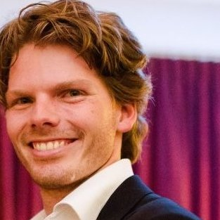
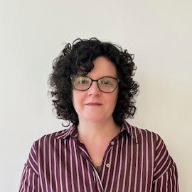
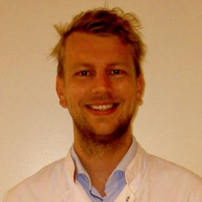
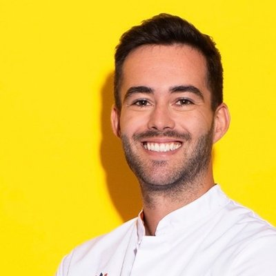
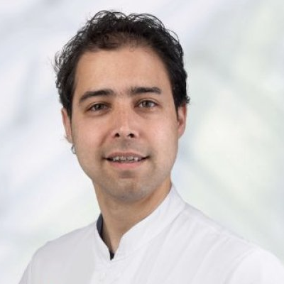
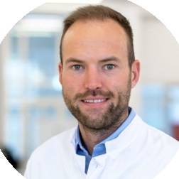
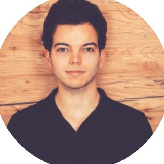
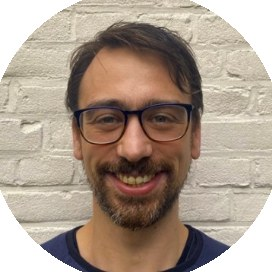

C4I · Department of Intensive Care Medicine, Amsterdam UMC
Center for Critical Care Computational Intelligence
We use the data of every previous intensive care patient to improve the care of every future one. We work from bytes to bedside: sharing data, building models, bringing them to the bedside, and testing whether patients benefit.
The center
A critically ill patient generates tens of thousands of data points a day, from monitors, life-support devices, laboratory tests and the electronic health record. Very little of it is used to help the next patient. The Center for Critical Care Computational Intelligence (C4I) was founded to change that.
The center is part of the Department of Intensive Care Medicine of Amsterdam UMC and is led by its founding director, Paul Elbers. It grew out of early work on data-driven decisions at the bedside, and has become a meeting place for intensive care professionals with a passion for data science and data scientists with an interest in intensive care medicine.
From bytes to bedside
We work the full circle, and each step feeds the next.
- Share data. Bring intensive care data together and make it available for research, responsibly.
- Build models. Develop models with data science and artificial intelligence, clinicians and data scientists together.
- Bring them to the bedside. Turn models into decision support inside the electronic health record.
- Test them. Evaluate in clinical trials whether patients are better off, and learn from the result.
Earlier publications refer to the center as the Laboratory for Critical Care Computational Intelligence.
Research
Sharing intensive care data
AmsterdamUMCdb was the first freely available, highly granular intensive care database from within the European Union. Its forthcoming Van Gogh version covers both locations of Amsterdam UMC. During the pandemic we coordinated the Dutch Data Warehouse against COVID-19, which brought together the full electronic health records of critically ill COVID-19 patients from hospitals across the Netherlands. ICUdata, a foundation we initiated, now combines the data of Dutch intensive care units; more than twelve hospitals have joined. INDICATE is a European project for federated sharing of intensive care data.
We also study how to share and reuse such data well: which public intensive care data sets exist and how they differ, how to share health data under the GDPR, and how to map the parameter names of different electronic health records to standard vocabularies. Data extracted automatically from the health record predicted mortality as well as data abstracted by hand.
Seeing what comes next
Much of our work builds models from routinely collected data that give an earlier warning. Kinetic estimated GFR identified acute kidney injury in patients with sepsis earlier than the standard criteria. The LoVe score estimates, shortly after intubation, how likely prolonged mechanical ventilation is. Other studies predict atrial fibrillation, failure of non-invasive ventilation, and readmission or death after intensive care, and find clinically interpretable subgroups of patients with sepsis.
A model that works in one hospital does not automatically work in the next. Training on data from more hospitals makes models generalise better, but they still need to be calibrated before they are used elsewhere.
Decision support at the bedside
With machine learning on AmsterdamUMCdb we developed decision support for the question whether a patient can safely leave intensive care. It was built in a public-private partnership, is integrated in the electronic health record and has been implemented in more than seven hospitals.
We look at other everyday decisions in the same way. When antibiotics had to be restarted after they were stopped, the clearest predictor was a short last course, and restarts went with higher mortality: room for support on when to stop. For the hardest decision, whether to continue or withdraw life-sustaining treatment, behavioural artificial intelligence makes explicit which criteria intensivists weigh. And for patients with a haematological malignancy, two weeks of intensive care added little certainty about long-term survival, which matters for time-limited trials of treatment.
The right antibiotic dose
AutoKinetics calculates a personal antibiotic dose from the patient's own data in the electronic health record, from the start of treatment. In the Right Dose, Right Now trial in two centres, personalised dosing was feasible and safe. It improved target attainment for ciprofloxacin; for the three other antibiotics it did not, and an economic evaluation found the approach, as tested, not cost-effective. Behind it lies pharmacokinetic work on vancomycin, ciprofloxacin and ceftazidime in intensive care patients.
Which treatment, for which patient
Intensive care is a sequence of decisions, each one changing the patient and the next choice. Observational data can show which patients benefit from which treatment, if analysed as cause and effect. With causal deep learning we found that patients with sepsis who benefit from corticosteroids are those with severe metabolic acidosis and impaired circulation, while less ill patients may be harmed. For mechanical ventilation, causal analysis showed there is no single safe threshold for mechanical power; our risk-adjusted score combines its intensity and duration with the stiffness of the lungs.
Reinforcement learning is the branch of artificial intelligence made for sequences of decisions: it learns which action to take in which situation from the outcomes that follow. We showed that a reinforcement learning model for haemodynamic treatment in sepsis transfers between patient populations in the United States and Europe, developed methods to shape rewards and to evaluate policies before they are used, and built clinical guidelines into reinforcement learning for mechanical ventilation. We also reviewed the field: by 2023 no study had shown that reinforcement learning improves outcomes for patients.
That is the gap we work on: bringing reinforcement learning to the bedside safely, with the clinician in the loop, so that caring for patients and learning from their care happen together.
Artificial intelligence in practice
Our systematic review of machine learning for the prediction of sepsis showed that models can predict sepsis ahead of time, and that studies of clinical implementation were needed to bridge the gap between bytes and bedside. We contributed to international guidance on implementing artificial intelligence in critical care and to a roadmap for its future. Large language models are the newest tool: in a chart review, one found far more bleeding events in intensive care than manual review, but expert judgement remained necessary.
Selected publications
- Cecconi M, Greco M, Shickel B, et al. Implementing Artificial Intelligence in Critical Care Medicine: a consensus of 22. Crit Care 2025;29:290. doi:10.1186/s13054-025-05532-2
- Otten M, Jagesar AR, Dam TA, et al. Does Reinforcement Learning Improve Outcomes for Critically Ill Patients? A Systematic Review and Level-of-Readiness Assessment. Crit Care Med 2024;52(2):e79–e88. doi:10.1097/CCM.0000000000006100
- Roggeveen LF, El Hassouni A, de Grooth HJ, et al. Reinforcement learning for intensive care medicine: actionable clinical insights from novel approaches to reward shaping and off-policy model evaluation. Intensive Care Med Exp 2024;12:32. doi:10.1186/s40635-024-00614-x
- Roggeveen LF, Guo T, Fleuren LM, et al. Right dose, right now: bedside, real-time, data-driven, and personalised antibiotic dosing in critically ill patients with sepsis or septic shock, a two-centre randomised clinical trial. Crit Care 2022;26:265. doi:10.1186/s13054-022-04098-7
- Thoral PJ, Fornasa M, de Bruin DP, et al. Explainable Machine Learning on AmsterdamUMCdb for ICU Discharge Decision Support: Uniting Intensivists and Data Scientists. Crit Care Explor 2021;3(9):e0529. doi:10.1097/CCE.0000000000000529
- Thoral PJ, Peppink JM, Driessen RH, et al. Sharing ICU Patient Data Responsibly Under the Society of Critical Care Medicine/European Society of Intensive Care Medicine Joint Data Science Collaboration: The Amsterdam University Medical Centers Database (AmsterdamUMCdb) Example. Crit Care Med 2021;49(6):e563–e577. doi:10.1097/CCM.0000000000004916
- Roggeveen L, El Hassouni A, Ahrendt J, et al. Transatlantic transferability of a new reinforcement learning model for optimizing haemodynamic treatment for critically ill patients with sepsis. Artif Intell Med 2021;112:102003. doi:10.1016/j.artmed.2020.102003
- Fleuren LM, Klausch TLT, Zwager CL, et al. Machine learning for the prediction of sepsis: a systematic review and meta-analysis of diagnostic test accuracy. Intensive Care Med 2020;46(3):383–400. doi:10.1007/s00134-019-05872-y
People
-
Paul Elbers, MD, PhD, EDICIntensivist and associate professor of intensive care medicine, Amsterdam UMCFounding directorAmsterdam UMC, LinkedIn
-
Judita RudokaitePostdoctoral researcher, Amsterdam UMCPostdocLinkedIn
-

Merijn ReulandIntensivist, Amsterdam UMCClose collaboratorAmsterdam UMC, LinkedIn
The center brings together PhD candidates, intensivists, residents, master's students, postdoctoral researchers and clinical information specialists.
PhD candidates
Some are in the final stage of their PhD while already working elsewhere.
-
Laurens BiesheuvelPhD candidate
-
Tariq DamPhD candidate
-
Paul HildersPhD candidate
-
Ameet JagesarPhD candidate
-

Lada LijovićPhD candidate -
Olivier MoulinPhD candidate
-

Martijn OttenPhD candidate -

Sander RozemeijerPhD candidate -
Olof SiglingPhD candidate
-

Patrick ThoralPhD candidate -
Martin VancuraPhD candidate
Alumni
Former PhD candidates of the center now work in clinical training programmes, in academia and in companies of their own.
-
Tingjie GuoPhD 2021
-
Ketan ParanjapePhD 2022
-

Christopher SauerPhD 2022 -

Lucas FleurenPhD 2023 -

Luca RoggeveenPhD 2026
Collaboration
We work with research groups at Vrije Universiteit Amsterdam, the University of Cambridge, Imperial College London, the University of Pittsburgh and the Laboratory for Computational Physiology at the Massachusetts Institute of Technology. In Amsterdam the center is closely involved with Amsterdam Medical Data Science and Amsterdam AI.
Funding
Our research has been funded by ZonMw, the Netherlands Enterprise Agency (RVO), Zorgverzekeraars Nederland and the European Commission.
Work with us
We welcome PhD candidates, postdoctoral researchers and students with a background in medicine, data science or artificial intelligence. We also welcome intensive care units and research groups that want to collaborate.
Write to info@amsterdammedicaldatascience.nl.
- To work with our data, request access to AmsterdamUMCdb.
- To meet the community in Amsterdam, come to a Data and Pizza meetup.